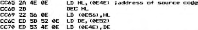
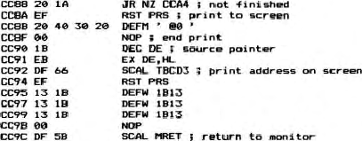

The last change is the major change and comes about because
of the different ways that the assemblers keep track of things.
This short piece of code is put at CC65 to suit the simpler V & T
requirements:–

The Nas-Dis routine ALLINO is next copied from CCBC to CC74
and the following code entered. This writes the end of source
code address to the screen and puts the cursor up two lines so
that when Newline is pressed after initiating V & T, the
assembler is ready to go.

The version of V & T that I have was produced before Nas-Sys 3
was introduced. Because of this, it suffers from not being
able to print the work areas on the top line while running under
Nas-Sys. If you would like to display these work areas on the
top line then the following small modifications should be made.
When V & T is initially loaded, the 2DH bytes of the Nas-Sys
table at 20AE need to be copied to 207E. Copy only 27H bytes to
207E and, as this leaves the Nasbug calls in the same place, the
work areas can be printed on the top line.
Because V & T jumps directly to the ‘WRITE’ subroutine in
Nas-Sys instead of through the SCAL routine, the jump address at
209C needs to be changed to 04FB.